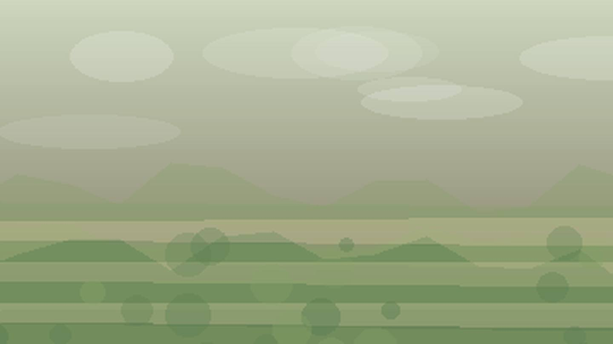

Главная / Удмуртская Республика

Удмуртская Республика
Что посадить
Что посадить
в Удмуртская Республика
Выберите природную зону в Удмуртская Республика: условия внутри региона различаются по теплу, влаге, ветру и длине сезона.
северная зона: короткий сезон и прохладное лето требуют ранних сортов, укрытий и самых устойчивых культур. Ориентиры внутри зоны: Глазов, Балезино.
Открыть страницу зоны → центральная зонацентральная зона: прохладная лесная зона подходит для базового огорода, ягодников и устойчивого сада. Ориентиры внутри зоны: Ижевск, Воткинск.
Открыть страницу зоны → южная зонаюжная зона: тёплая степная зона сильна для овощей, бахчевых и сада при контроле влаги. Ориентиры внутри зоны: Сарапул, Можга.
Открыть страницу зоны →